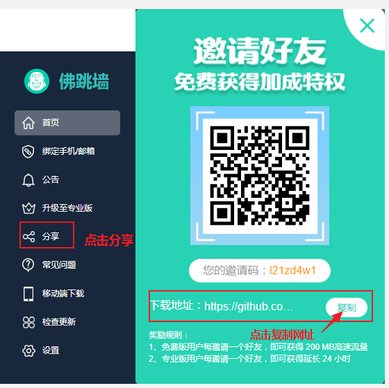
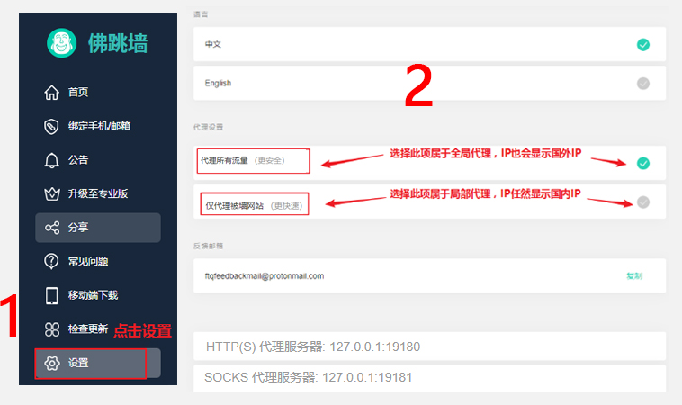

| 佛跳墙常见问题 |
|
1、官网网站无法打开（无法下载）
（如图所示）
答：您好，点击客户端左侧的《分享》选项可以找到我们的最新下载地址，也可以手动保存我们的下载地址，https://github.com/getfotiaoqiang/download |
|  |
|
2、高速流量用完后，我还能免费使用VPN吗
答：您好，我们的VPN是一直免费的，在您用完免费的50MB高速流量之后，还是可以一直使用，只是速度大约在10KB每秒，而专业版速度是免费版速度的100倍，平均网速可达1MB每秒，建议您成为我们的专业版客户。 |
|
3、使用免费版时，速度有时会很卡，是什么原因
答：这种情况，应该是您的免费高速流量已经用完，所以速度会降低到大约10KB每秒，免费版可以一直使用，但是速度确实不理想，如果您对VPN有需求，建议您升级专业版，保持长期良好的使用。（点击查看《为什么我的网速很慢》超链接） |
|
4、佛跳墙免费版和专业版版有什么区别？
答：佛跳墙免费版只有50MB免费高速流量，高速流量用完后还是可以正常翻墙，但是大约只有10KB每秒的速度；而专业版连接的是专属通道，具有无限的高速流量，平均速度可达1MB每秒，具有100%稳定性。（备注：注册账户后，免费版账户和专业版账户都可以登录3台设备） |
|
5、连接佛跳墙VPN后，显示的IP地址还是本国地址
答： |
|  |
|
6、怎么切换路线，一直没有变化
答：在您切换线路的时候，系统会根据当前线路速度智能为您切换当前速度最快的线路，您可能看到线路没有变化，实际上已经切换成功；智能切换是为了保障您随时处于高速状态。 |
|
7、IOS版本什么时候可以用
答：ios版本我们正在测试中，测试完毕就会马上发布ios版本，请您继续关注，下载地址： https://github.com/getfotiaoqiang/download |
|
8、VPN连接成功后，开始能正常使用，后面又不能正常使用
答： |
|
9、连接VPN后，不能打开国外的网站
答： |
|
10、其他问题
答：如果上述建议，还不能帮助你解决问题，请您点击《日志发送教程》给我们发送日志，我们会为您定位问题，及时回复您， 帮您处理。 链接日志发送教程 |
| 非常感谢您的浏览，祝您翻墙愉快！ |